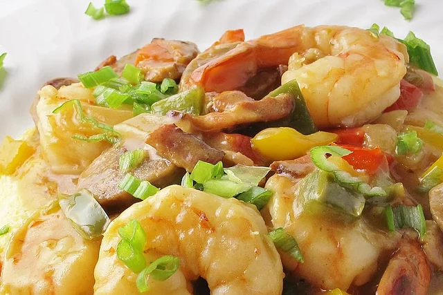

Southern Shrimp and Grits

Description
Nothing says down-home comfort quite like shrimp and grits. Bold, peppery gravy, succulent seafood,
and rich sausage create a bite that's too perfect not to make. Learn how to create a restaurant-quality
brunch dish in a few simple steps and have a deliciously hearty Lowcountry meal in no time.
Ingredients
- Stone ground grits
- Shrimp
- Onion
- Bell peppers
- Garlic
- Few pieces of bacon
- Andouille sausage
- Flour
- Butter
- Cheddar
Steps
- Add water, salt, and milk to a standard-sized pot (use half-and-half for an even richer result) and allow the mixture to come to a simmer before whisking in the grits. Gently stir, allowing the grits to come back to a gentle bubbling, then lower the heat and cover until fully cooked.
- While the grits are cooking, finely chop onion, bell peppers, and garlic to prep for the gravy. Next, cook a few pieces of bacon until crisp and remove them from the pan for later use. Add a pound of chopped andouille sausage and cook until the color is a deep brown.
- Set the sausage aside before quickly sauteing the shrimp in the remaining fat — the goal here is to add color without fully cooking, as the shrimp will finish in the gravy. Set them aside, add a splash of bacon grease to the pan, and saute the garlic vegetable medley until the onions are translucent.
- Whisk in flour, butter, and chicken stock before adding the andouille sausage. Allow the gravy to simmer for 4-5 minutes, then stir in shrimp and fresh parsley. Now's the time for customization — add Cheddar to the grits for an even creamier bite or hot sauce to your gravy for a mouthwatering kick. Spoon the shrimp and gravy over the grits and enjoy the rich flavors of this timeless Southern delicacy.
Return to Home